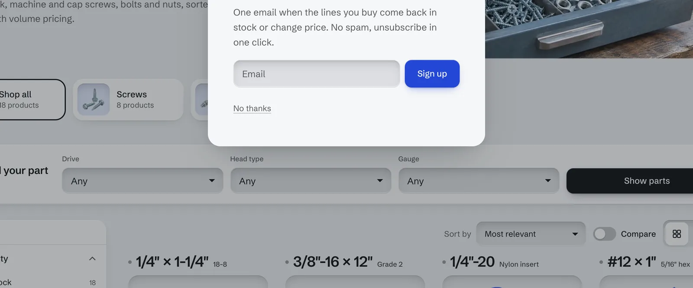
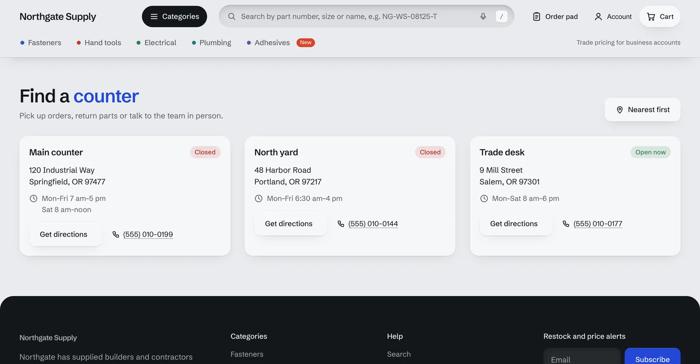

Selling
Pop-ups, brands and stores
#Newsletter pop-up
The Newsletter pop-up section lives in the footer group, so it can show on every page.


- It opens after the delay you set, counted from the visitor's first tap, click or key press, or when the pointer leaves the window on desktop. At most once per visit.
- Closing it hides it for the number of days you choose; signing up hides it for good.
- Add a Discount code (created first in Discounts) to show after sign-up.
- It never opens on the cart or password page, or over the cart drawer.
#Promotion tab
The Promotion tab section adds a small "Get 10% off" tab on the edge of the screen. It opens a card with your code, a copy button and a link. Closing it hides it for the days you set.
#Age check
The Age check section asks visitors to confirm their age before showing restricted products such as chemicals, aerosols or blades.
- Add Age check to the footer group in the theme editor and turn on Ask visitors to confirm their age.
- In Show on, choose Every page, or Tagged products and collections and enter the Product tag (for example
age-restricted). - Set the Minimum age and how long the answer is remembered.
#Brands
- Brands we stock shows logos in a grid or a scrolling strip. Logos without a link open the brand's products when Link logos without a link to the brand's products is on.
- Create a page with the template page.brands for an A to Z list of every vendor with a letter bar. Add Brand logo blocks to show logos beside the names, and point All brands link at that page.
#Store locator
- Create a page with the template page.store-locator.
- In the theme editor, add one Location block per store with the address, opening hours, phone and email.
- Add Latitude and Longitude for Nearest first, which sorts stores by distance after the visitor allows location.
- Add Opens at, Closes at and Open days to show Open now or Closed.

